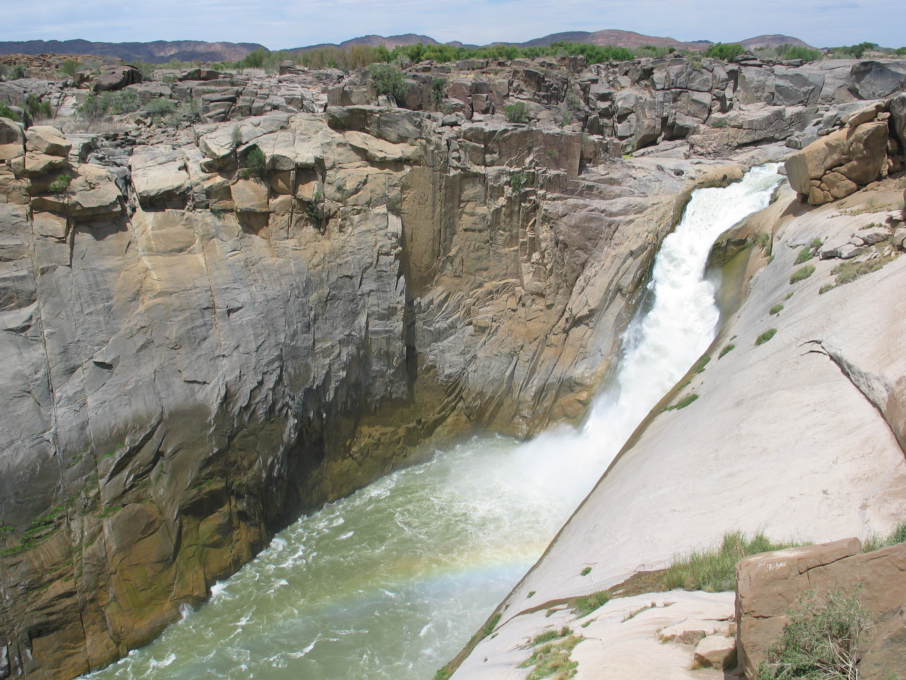
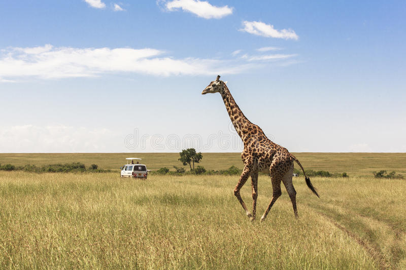

At Augrabies Falls National Park, travelers can watch the Orange River plunge into a gaping gorge at the world's sixth largest waterfall. In the desert, black-maned Kalahari lions and quirky quiver trees eke out a living on the scorching plains. And the province is also rich in history; visitors can tour historic battlefields, as well as Victorian villas where mining magnates once mingled during the country's illustrious diamond rush days.
Steeped in stark, semi-desert beauty, the Northern Cape province is the largest of all the South African provinces and the most sparsely populated. This is a place to find solitude in a land of big skies and bold hues. From the red earth and golden grasses of the Kgalagadi (Kalahari) Transfrontier Park, one of the world's largest wilderness areas, to the kaleidoscopic wildflowers of Namaqualand and the deep blue, cloudless skies of Kimberley, once the diamond capital of the world, the region serves up striking vistas.
ggggg